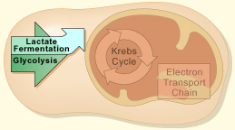

OBJECTIVE: to examine how both muscle cells and yeast cells benefit from fermentation

As you have seen, fermentation does produce a small number of ATP molecules, providing a cell with an energy source when cellular respiration isn't enough. Both muscle cells and yeast cells benefit from fermentation. Observe how this happens in the animation below. When you finish, scroll down to answer the question below.
Answer the following question in the box provided. After you complete the answer, click the Check Your Answer button for feedback.
1. Compare the by-products of muscle and yeast cell fermentation. How are they different?